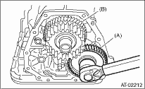
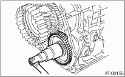

1. Set the range select lever to the “P” range.
2. Using a plastic hammer, install the reduction driven gear assembly and the new washer, and tighten the new lock nut.
Tightening torque:
100 N·m (10.2 kgf-m, 73.8 ft-lb)

|
(A) |
Reduction driven gear ASSY |
|
(B) |
Reduction drive gear ASSY |
3. After tightening, stake the lock nut securely.
4. Join the transmission case and the extension case, and then install the rear vehicle speed sensor. 
5. Install the transmission assembly to the vehicle.
1. Set the range select lever to the “P” range.
2. Use a plastic hammer to install reduction driven gear assembly.
3. Use a plastic hammer to install the center differential.
4. Install new self-locking nut and washer.
Tightening torque:
100 N·m (10.2 kgf-m, 73.8 ft-lb)

5. After tightening, stake the lock nut securely.
6. Insert the rear drive shaft assembly.
7. Join the transmission case and the extension case, and then install the rear vehicle speed sensor.
8. Install the transmission assembly to the vehicle.